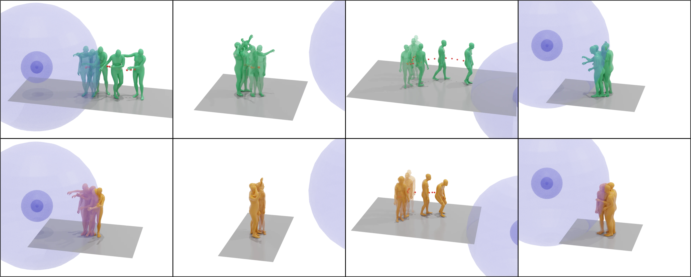

MPhil student · The University of Hong Kong
Shuyang Xu
I work on computer graphics, human motion generation, and robotics.
xsy27@connect.hku.hkAbout
I am a second-year MPhil student in Computer Science at the School of Computing and Data Science, The University of Hong Kong (HKU), advised by Prof. Taku Komura. I received my BEng in Computer Science from HKU in 2025.
I am interested in building systems that understand movement and generate natural, responsive human motion.
News
Our paper MOSPA was accepted to NeurIPS 2025 as a Spotlight paper.
Publications
Education
2025–Present
MPhil in Computer Science
The University of Hong Kong · Advisor: Prof. Taku Komura
The University of Hong Kong · Advisor: Prof. Taku Komura
2021–2025
BEng in Computer Science
The University of Hong Kong
The University of Hong Kong